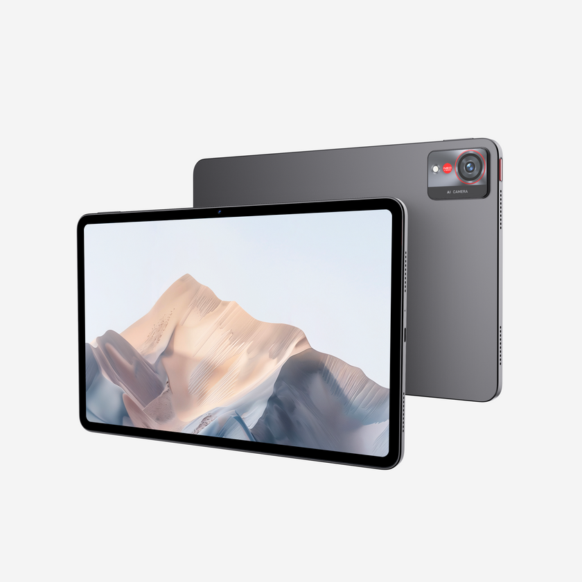
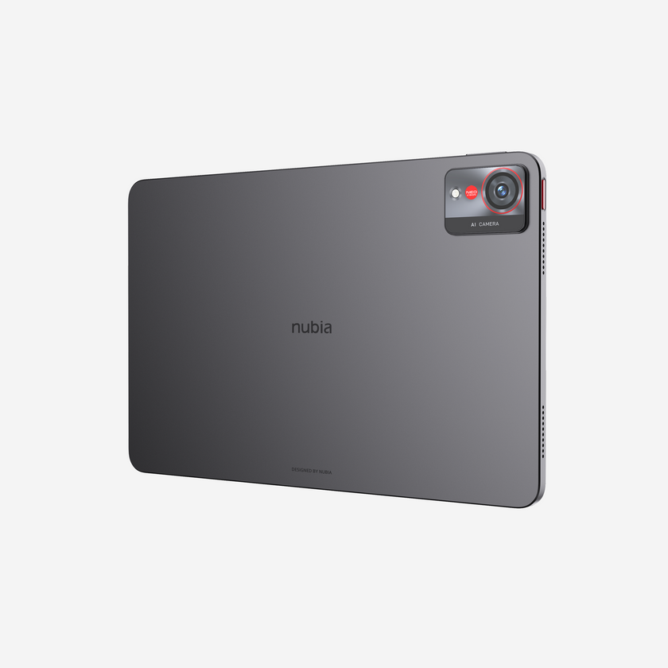
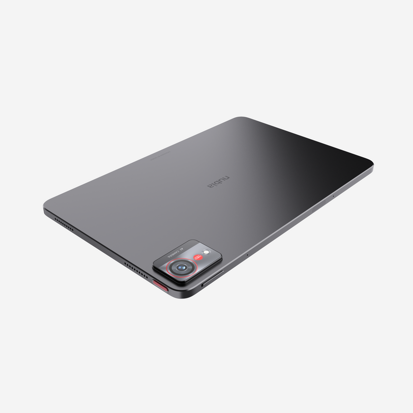
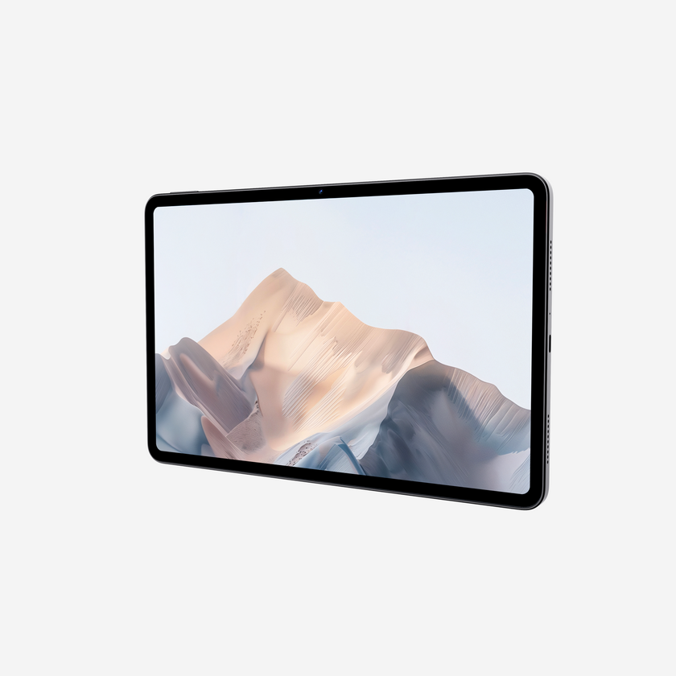

| Quick Bird

High-end portable computing devices continue to redefine standards for mobile productivity and immersive entertainment. The nubia Pad Pro stands out as an elite tablet combining desktop-grade processing power, a stunning ultra-smooth display, and massive battery endurance to cater to demanding professionals and tech enthusiasts.
Check specs and official prices:
More Details & Buying OptionsElite Snapdragon® 8 Gen 3 Performance and Power: Powered by the flagship Snapdragon® 8 Gen 3 Mobile Platform, this tablet delivers lightning-fast processing capabilities, seamless multitasking, and superior graphics rendering for heavy applications and gaming. Furthermore, it is backed by a robust 10100mAh battery supporting 66W fast charging, ensuring you stay powered up throughout intensive work and entertainment sessions.

Stunning 2.8K 144Hz Full-Spectrum Ultra Display: Experience breathtaking visual clarity and fluid motion. The device features an advanced 2.8K resolution screen paired with a blazing-fast 144Hz refresh rate, delivering crystal-clear details, vibrant colors, and butter-smooth scrolling whether you are editing media, drawing, or streaming videos.

Slim and Lightweight Design for Effortless Portability: Despite packing heavy-duty hardware and a massive battery, the nubia Pad Pro maintains a remarkably slim and lightweight chassis. This ergonomic construction ensures comfortable handling, making it an ideal companion for travel, mobile offices, and daily on-the-go usage.
